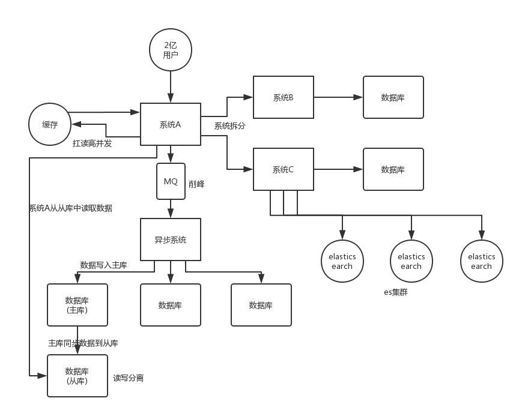

如何设计一个高并发系统？
假设你在某知名电商公司干过高并发系统，用户上亿，一天流量几十亿，高峰期并发量上万，甚至是十万。那么人家一定会仔细盘问你的系统架构，你们系统啥架构？怎么部署的？部署了多少台机器？缓存咋用的？MQ 咋用的？数据库咋用的？就是深挖你到底是如何扛住高并发的。
因为真正干过高并发的人一定知道，脱离了业务的系统架构都是在纸上谈兵，真正在复杂业务场景而且还高并发的时候，那系统架构一定不是那么简单的，用个 redis，用 mq 就能搞定？当然不是，真实的系统架构搭配上业务之后，会比这种简单的所谓“高并发架构”要复杂很多倍。
如果有面试官问你个问题说，如何设计一个高并发系统？那么不好意思，一定是因为你实际上没干过高并发系统。面试官看你简历就没啥出彩的，感觉就不咋地，所以就会问问你，如何设计一个高并发系统？其实说白了本质就是看看你有没有自己研究过，有没有一定的知识积累。
最好的当然是招聘个真正干过高并发的哥儿们咯，但是这种哥儿们人数稀缺，不好招。所以可能次一点的就是招一个自己研究过的哥儿们，总比招一个啥也不会的哥儿们好吧！
所以这个时候你必须得做一把个人秀了，秀出你所有关于高并发的知识！
面试题剖析
其实所谓的高并发，如果你要理解这个问题呢，其实就得从高并发的根源出发，为啥会有高并发？为啥高并发就很牛逼？
我说的浅显一点，很简单，就是因为刚开始系统都是连接数据库的，但是要知道数据库支撑到每秒并发两三千的时候，基本就快完了。所以才有说，很多公司，刚开始干的时候，技术比较 low，结果业务发展太快，有的时候系统扛不住压力就挂了。
当然会挂了，凭什么不挂？你数据库如果瞬间承载每秒 5000/8000，甚至上万的并发，一定会宕机，因为比如 mysql 就压根儿扛不住这么高的并发量。
所以为啥高并发牛逼？就是因为现在用互联网的人越来越多，很多 app、网站、系统承载的都是高并发请求，可能高峰期每秒并发量几千，很正常的。如果是什么双十一之类的，每秒并发几万几十万都有可能。
那么如此之高的并发量，加上原本就如此之复杂的业务，咋玩儿？真正厉害的，一定是在复杂业务系统里玩儿过高并发架构的人，但是你没有，那么我给你说一下你该怎么回答这个问题：
可以分为以下 6 点：
- 系统拆分
- 缓存
- MQ
- 分库分表
- 读写分离
- ElasticSearch

系统拆分
将一个系统拆分为多个子系统，用 dubbo 来搞。然后每个系统连一个数据库，这样本来就一个库，现在多个数据库，不也可以扛高并发么。
缓存
缓存，必须得用缓存。大部分的高并发场景，都是读多写少，那你完全可以在数据库和缓存里都写一份，然后读的时候大量走缓存不就得了。毕竟人家 redis 轻轻松松单机几万的并发。所以你可以考虑考虑你的项目里，那些承载主要请求的读场景，怎么用缓存来抗高并发。
MQ
MQ，必须得用 MQ。可能你还是会出现高并发写的场景，比如说一个业务操作里要频繁搞数据库几十次，增删改增删改，疯了。那高并发绝对搞挂你的系统，你要是用 redis 来承载写那肯定不行，人家是缓存，数据随时就被 LRU 了，数据格式还无比简单，没有事务支持。所以该用 mysql 还得用 mysql 啊。那你咋办？用 MQ 吧，大量的写请求灌入 MQ 里，排队慢慢玩儿，后边系统消费后慢慢写，控制在 mysql 承载范围之内。所以你得考虑考虑你的项目里，那些承载复杂写业务逻辑的场景里，如何用 MQ 来异步写，提升并发性。MQ 单机抗几万并发也是 ok 的，这个之前还特意说过。
分库分表
分库分表，可能到了最后数据库层面还是免不了抗高并发的要求，好吧，那么就将一个数据库拆分为多个库，多个库来扛更高的并发；然后将一个表拆分为多个表，每个表的数据量保持少一点，提高 sql 跑的性能。
读写分离
读写分离，这个就是说大部分时候数据库可能也是读多写少，没必要所有请求都集中在一个库上吧，可以搞个主从架构，主库写入，从库读取，搞一个读写分离。读流量太多的时候，还可以加更多的从库。
ElasticSearch
Elasticsearch，简称 es。es 是分布式的，可以随便扩容，分布式天然就可以支撑高并发，因为动不动就可以扩容加机器来扛更高的并发。那么一些比较简单的查询、统计类的操作，可以考虑用 es 来承载，还有一些全文搜索类的操作，也可以考虑用 es 来承载。
上面的 6 点，基本就是高并发系统肯定要干的一些事儿，大家可以仔细结合之前讲过的知识考虑一下，到时候你可以系统的把这块阐述一下，然后每个部分要注意哪些问题，之前都讲过了，你都可以阐述阐述，表明你对这块是有点积累的。
说句实话，毕竟你真正厉害的一点，不是在于弄明白一些技术，或者大概知道一个高并发系统应该长什么样？其实实际上在真正的复杂的业务系统里，做高并发要远远比上面提到的点要复杂几十倍到上百倍。你需要考虑：哪些需要分库分表，哪些不需要分库分表，单库单表跟分库分表如何 join，哪些数据要放到缓存里去，放哪些数据才可以扛住高并发的请求，你需要完成对一个复杂业务系统的分析之后，然后逐步逐步的加入高并发的系统架构的改造，这个过程是无比复杂的，一旦做过一次，并且做好了，你在这个市场上就会非常的吃香。